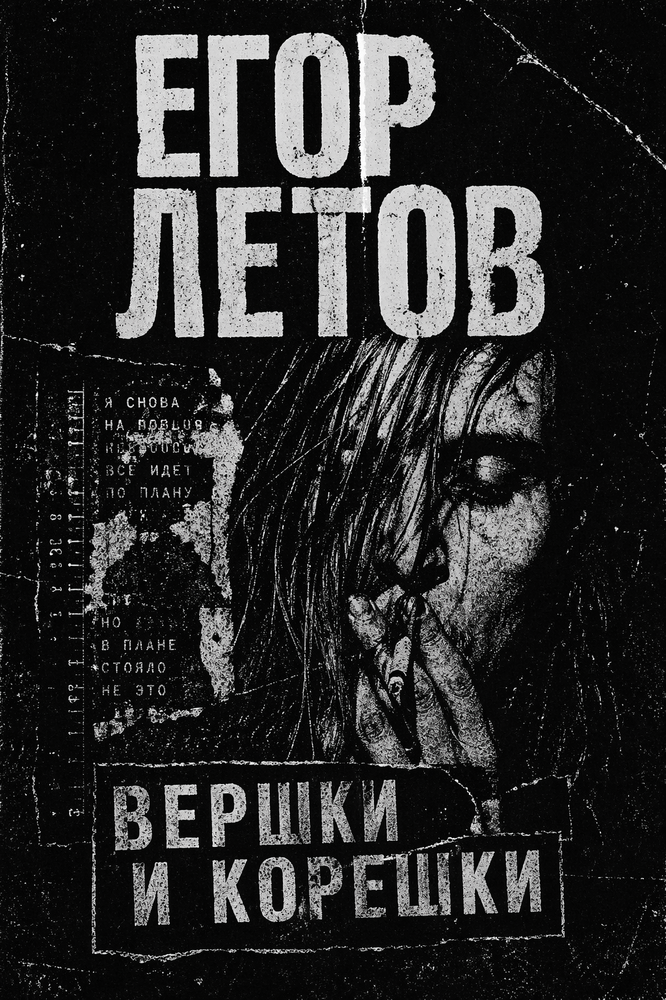

1985–2007
ДИСКОГРАФИЯ СТУДИЙНЫЕ АЛЬБОМЫ
РАННИЙ ПЕРИОД · 1985–1986
1985Поганая молодёжьДебютный альбом
1985ОптимизмЭкспериментальный
1986Игра в бисер перед свиньямиСтановление стиля
1986Красный альбомСборник ранних записей
КЛАССИЧЕСКИЙ ПЕРИОД · 1987
1987МышеловкаНачало классики
1987Хорошо!!Энергичный панк
1987ТоталитаризмКонцептуальный
1987НекрофилияМрачное звучание
ЗОЛОТОЙ ВЕК · 1988–1990
1988Всё идёт по плануКультовый альбом
1988Так закалялась стальКонцертный
1989Русское поле экспериментовВершина творчества
1989Вершки и корешкиАкустика
1990Инструкция по выживаниюФинал классики
1990Последний концерт в ТаллинеLive
ЕГОР И ОПИЗДЕНЕВШИЕ · 1990–1993
1990Прыг-скокПсиходелия
1993Сто лет одиночестваМагнум опус
ВОЗВРАЩЕНИЕ ГРОБ · 1997–2007
1989Русское поле экспериментовВершина творчества
1989Вершки и корешкиАкустика
1990Инструкция по выживаниюФинал классики

50+
АЛЬБОМОВ
300+
ПЕСЕН
24
ГОДА ТВОРЧЕСТВА
∞
НАСЛЕДИЕ
✦ 50+ АЛЬБОМОВ ✦ 300+ ПЕСЕН ✦ 24 ГОДА ТВОРЧЕСТВА ✦ БЕССМЕРТНОЕ НАСЛЕДИЕ ✦